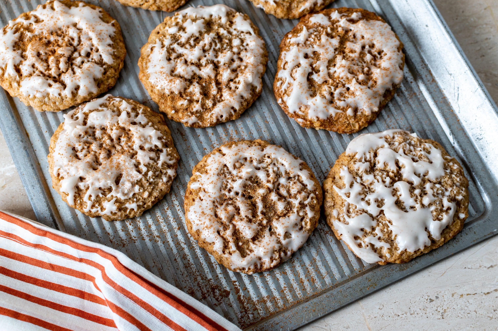

A&S Homemade
Homemade recipes — simple and made with love
Oatmeal Cookies
Description: Crispy on the edges, chewy in the center. These oatmeal cookies are a wholesome treat.
Ingredients:
- 150g rolled oats
- 100g flour
- 100g brown sugar
- 100g butter, softened
- 1 egg
- 1/2 tsp baking soda, pinch of salt
- Optional: raisins or chocolate chips
Instructions:
- Cream butter and sugar. Beat in the egg.
- Mix in flour, baking soda, and salt. Stir in oats (and raisins/chips if using).
- Drop spoonfuls onto a baking sheet. Bake at 180°C for 10-12 minutes until golden.